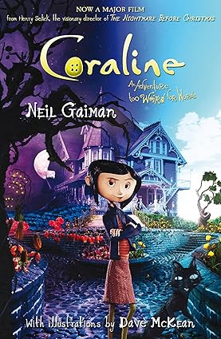

Deadpool & Wolverine
Wolverine está se recuperando quando cruza seu caminho com Deadpool. Juntos, eles formam uma equipe e enfrentam um inimigo em comum.

Coraline e o Mundo Secreto
Enquanto explora sua nova casa à noite, a pequena Coraline descobre uma porta secreta que contém um mundo parecido com o dela, porém melhor em muitas maneiras. Todos têm botões no lugar dos olhos, os pais são carinhosos e os sonhos de Coraline viram realidade por lá.